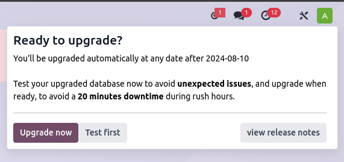
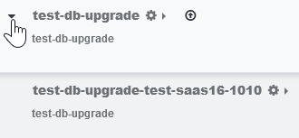
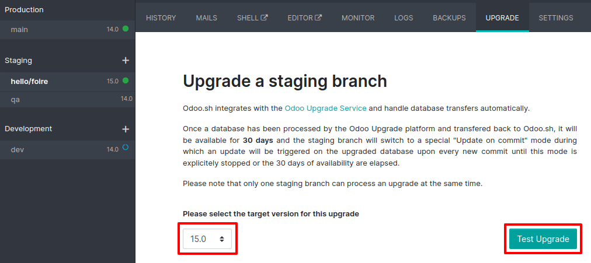

Upgrade¶
An upgrade is the process of moving your database from an older version to a newer supported version (e.g., Odoo 14.0 to Odoo 16.0). Frequently upgrading is essential as each version comes with new and improved features, bug fixes, and security patches.
The Rolling Release process allows Odoo Online customers to upgrade their database directly from a message prompt sent to the database administrator as soon as a new version is released. The invitation to upgrade is only sent if no issues are detected during the automatic tests.
It is strongly recommended to manually test the upgrade first. Clicking I want to test first redirects to the database manager, where it is possible to request an upgraded test database and check it for any discrepancies.
It is not recommended to click Upgrade Now without testing first, as it immediately triggers the live production database upgrade.
If the Rolling Release process detects an issue with the upgrade, it will be deactivated until the issue is resolved.
An upgrade does not cover:
Downgrading to a previous version of Odoo
Switching editions (e.g., from Community to Enterprise)
Changing hosting type (e.g., from on-premise to Odoo Online)
Migrating from another ERP to Odoo
警告
If your database contains a custom module, you must first upgrade its source code to be compatible with the new version of Odoo before upgrading.
Upgrading in a nutshell¶
Request an upgraded test database (see obtaining an upgraded test database).
Thoroughly test the upgraded database (see testing the new version of the database).
Report any issue encountered during the testing to Odoo via the support page.
(If applicable) : upgrade the source code of your custom module to be compatible with the new version of Odoo.
Once all issues are resolved and you are confident that the upgraded database can be used as your main database without any issues, plan the upgrade of your production database.
Request the upgrade for the production database, rendering it unavailable for the time it takes to complete the process (see upgrading the production database).
Report any issue encountered during the upgrade to Odoo via the support page.
Obtaining an upgraded test database¶
The Upgrade page is the main platform for requesting an upgraded database. However, depending on the hosting type, you can upgrade from the command line (on-premise), the Odoo Online database manager, or your Odoo.sh project.
注釈
The Upgrade platform follows the same Privacy Policy as the other Odoo.com services. Visit the General Data Protection Regulation page to learn more about how Odoo handles your data and privacy.
Odoo Online databases can be manually upgraded via the database manager.
The database manager displays all databases associated with the user's account. Databases not on the most recent version of Odoo display an arrow in a circle icon next to their name, indicating that they can be upgraded.

Click the arrow in a circle icon to start the upgrade process. In the popup, fill in:
The version of Odoo you want to upgrade to, usually the latest version
The email address that should receive the link to the upgraded database
The Purpose of the upgrade, which is automatically set to Test for your first upgrade request
The Upgrade in progress tag is displayed next to the database name until completion. Once the process succeeds, an email containing a link to the upgraded test database is sent to the address provided. The database can also be accessed from the database manager by clicking the dropdown arrow before the database name.
Odoo.sh is integrated with the upgrade platform to simplify the upgrade process.
The latest production daily automatic backup is then sent to the upgrade platform.
Once the upgrade platform is done upgrading the backup and uploading it on the branch, it is
put in a special mode: each time a commit is pushed on the branch, a restore
operation of the upgraded backup and an update of all the custom modules occur. This
allows you to test your custom modules on a pristine copy of the upgraded database. The log
file of the upgrade process can be found in your newly upgraded staging build by going to
~/logs/upgrade.log.
注釈
In databases where custom modules are installed, their source code must be up-to-date with the target version of Odoo before the upgrade can be performed. If there are none, the "update on commit" mode is skipped, the upgraded database is built as soon as it is transferred from the upgrade platform, and the upgrade mode is exited.
The standard upgrade process can be initiated by entering the following command line on the machine where the database is hosted:
$ python <(curl -s https://upgrade.odoo.com/upgrade) test -d <your db name> -t <target version>
The following command can be used to display the general help and the main commands:
$ python <(curl -s https://upgrade.odoo.com/upgrade) --help
An upgraded test database can also be requested via the Upgrade page.
注釈
For security reasons, only the person who submitted the upgrade request can download it.
For storage reasons, the database's copy is submitted without a filestore to the upgrade server. Therefore, the upgraded database does not contain the production filestore.
Before restoring the upgraded database, its filestore must be merged with the production filestore to be able to perform tests in the same conditions as it would be in the new version.
The upgraded database contains:
A
dump.sqlfile containing the upgraded databaseA
filestorefolder containing files extracted from in-database records into attachments (if there are any) and new standard Odoo files from the targeted Odoo version (e.g., new images, icons, payment provider's logos, etc.). This is the folder that should be merged with the production filestore in order to get the full upgraded filestore.
注釈
You can request multiple test databases if you wish to test an upgrade more than once.
注釈
When an upgrade request is completed, an upgrade report is attached to the successful upgrade email, and it becomes available in the Discuss app for users who are part of the "Administration / Settings" group. This report provides important information about the changes introduced by the new version.
Testing the new version of the database¶
It is essential to spend some time testing the upgraded test database to ensure that you are not stuck in your day-to-day activities by a change in views, behavior, or an error message once the upgrade goes live.
注釈
Test databases are neutralized, and some features are disabled to prevent them from impacting the production database:
Scheduled actions are disabled.
Outgoing mail servers are disabled by archiving the existing ones and adding a fake one.
Payment providers and delivery carriers are reset to the test environment.
Bank synchronization is disabled. Should you want to test the synchronization, contact your bank synchronization provider to get sandbox credentials.
Testing as many of your business flows as possible is strongly recommended to ensure they are working correctly and to get more familiar with the new version.
Basic test checklist
Are there views that are deactivated in your test database but active in your production database?
Are your usual views still displayed correctly?
Are your reports (invoice, sales order, etc.) correctly generated?
Are your website pages working correctly?
Are you able to create and modify records? (sales orders, invoices, purchases, users, contacts, companies, etc.)
Are there any issues with your mail templates?
Are there any issues with saved translations?
Are your search filters still present?
Can you export your data?
Checking a random product in your product catalog and comparing its test and production data to verify everything is the same (product category, selling price, cost price, vendor, accounts, routes, etc.).
Buying this product (Purchase app).
Confirming the reception of this product (Inventory app).
Checking if the route to receive this product is the same in your production database (Inventory app).
Selling this product (Sales app) to a random customer.
Opening your customer database (Contacts app), selecting a customer (or company), and checking its data.
Shipping this product (Inventory app).
Checking if the route to ship this product is the same as in your production database (Inventory app).
Validating a customer invoice (Invoicing or Accounting app).
Crediting the invoice (issuing a credit note) and checking if it behaves as in your production database.
Checking your reports' results (Accounting app).
Randomly checking your taxes, currencies, bank accounts, and fiscal year (Accounting app).
Making an online order (Website apps) from the product selection in your shop until the checkout process and checking if everything behaves as in your production database.
This list is not exhaustive. Extend the example to your other apps based on your use of Odoo.
If you face an issue while testing your upgraded test database, you can request the assistance of Odoo via the support page by selecting the option related to testing the upgrade. In any case, it is essential to report any problem encountered during the testing to fix it before upgrading your production database.
You might encounter significant differences with standard views, features, fields, and models during testing. Those changes cannot be reverted on a case-by-case basis. However, if a change introduced by a new version breaks a customization, it is the responsibility of the maintainer of your custom module to make it compatible with the new version of Odoo.
ちなみに
Do not forget to test:
Integrations with external software (EDI, APIs, etc.)
Workflows between different apps (online sales with eCommerce, converting a lead all the way to a sales order, delivery of products, etc.)
Data exports
Automated actions
Server actions in the action menu on form views, as well as by selecting multiple records on list views
Upgrading the production database¶
Once the tests are completed and you are confident that the upgraded database can be used as your main database without any issues, it is time to plan the go-live day. It can be planned in coordination with Odoo's upgrade support analysts, reachable via the support page.
Your production database will be unavailable during its upgrade. Therefore, we recommend planning the upgrade at a time when the use of the database is minimal.
As the standard upgrade scripts and your database are constantly evolving, it is also recommended to frequently request another upgraded test database to ensure that the upgrade process is still successful, especially if it takes a long time to finish. Fully rehearsing the upgrade process the day before upgrading the production database is also recommended.
重要
Going into production without first testing may lead to:
Users failing to adjust to the changes and new features
Business interruptions (e.g., no longer having the possibility to validate an action)
Poor customer experience (e.g., an eCommerce website that does not work correctly)
The process of upgrading a production database is similar to upgrading a test database with a few exceptions.
The process is similar to obtaining an upgraded test database, except for the purpose option, which must be set to Production instead of Test.
警告
Once the upgrade is requested, the database will be unavailable until the upgrade is finished. Once the process is completed, it is impossible to revert to the previous version.
The process is similar to obtaining an upgraded test database on the Production branch.

The process is triggered as soon as a new commit is made on the branch. This allows the upgrade process to be synchronized with the deployment of the custom modules' upgraded source code. If there are no custom modules, the upgrade process is triggered immediately.
重要
The database is unavailable throughout the process. If anything goes wrong, the platform automatically reverts the upgrade, as it would be for a regular update. In case of success, a backup of the database before the upgrade is created.
The update of your custom modules must be successful to complete the entire upgrade process. Make sure the status of your staging upgrade is successful before trying it in production.
The command to upgrade a database to production is similar to the one of upgrading a test
database except for the argument test, which must be replaced by production:
$ python <(curl -s https://upgrade.odoo.com/upgrade) production -d <your db name> -t <target version>
An upgraded production database can also be requested via the Upgrade page. Once the database is uploaded, any modification to your production database will not be present on your upgraded database. This is why we recommend not using it during the upgrade process.
重要
When requesting an upgraded database for production purposes, the copy is submitted without a filestore. Therefore, the upgraded database filestore must be merged with the production filestore before deploying the new version.
In case of an issue with your production database, you can request the assistance of Odoo via the support page by selecting the option related to the upgrade in production.
Service-level agreement (SLA)¶
With Odoo Enterprise, upgrading a database to the most recent version of Odoo is free, including any support required to rectify potential discrepancies in the upgraded database.
Information about the upgrade services included in the Enterprise Licence is available in the Odoo Enterprise Subscription Agreement. However, this section clarifies what upgrade services you can expect.
Upgrade services covered by the SLA¶
Databases hosted on Odoo's cloud platforms (Odoo Online and Odoo.sh) or self-hosted (On-Premise) can benefit from upgrade services at all times for:
the upgrade of all standard applications;
the upgrade of all customizations created with the Studio app, as long as Studio is still installed and the respective subscription is still active; and
the upgrade of all developments and customizations covered by a maintenance of customizations subscription.
Upgrade services are limited to the technical conversion and adaptation of a database (standard modules and data) to make it compatible with the version targeted by the upgrade.
Upgrade services not covered by the SLA¶
The following upgrade-related services are not included:
the cleaning of pre-existing data and configurations while upgrading;
the upgrade of custom modules created in-house or by third parties, including Odoo partners;
lines of code added to standard modules, i.e., customizations created outside the Studio app, code entered manually, and automated actions using Python code; and
training on using the upgraded version's features and workflows.